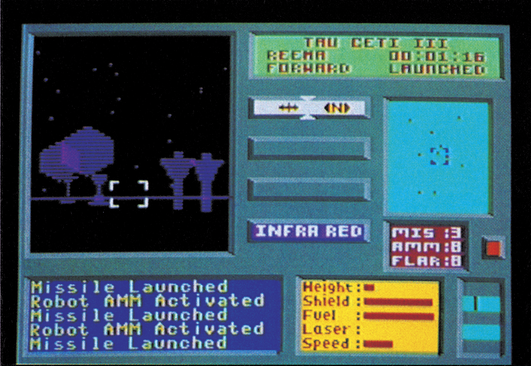
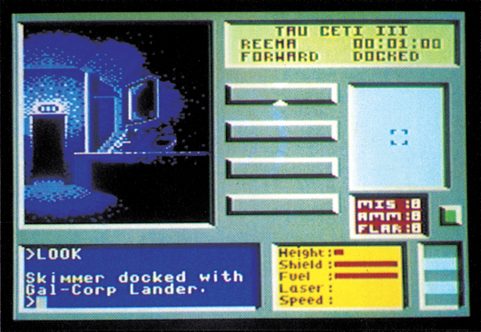

Planet in Gefahr
Eine neue, heroische Aufgabe im Weltraum erwartet den Spieler bei »Tau Ceti«, das in England schon jetzt zu den Klassikern der Software-Branche zählt.
Im Jahre 2090 beginnt die Besiedelung des dritten
Planeten des Sternensystems Tau Ceti. Doch schon kurz nach der Kolonisierung rafft eine bisher unbekannte Seuche die gesamte Bevölkerung dahin. Ein zweiter Siedlertrupp verschwindet kurz nach der Landung auf dem Planeten spurlos. Auf der Erde stellt man folgende Theorie auf: Das zentrale Verteidigungssystem muß innerhalb der letzten Jahre einen Schaden erlitten haben, so daß es nicht mehr zwischen Freund und Feind unterscheiden kann und alles vernichtet, was sich der Planetenoberfläche nähert. Um den Planeten wieder zurückzugewinnen, sieht man auf der Erde nur eine einzige Möglichkeit: Ein Mann könnte sich, mit einem kleinen Gleiter ausgestattet, durch das Verteidigungssystem durchschlängeln und dessen Reaktor stillegen. Zu diesem Zweck muß er ein Kühlungssystem zusammensetzen, dessen Einzelteile über den gesamten Planeten verstreut sind. Für diese praktisch als unmöglich angesehene Mission melden Sie sich jedoch als Freiwilliger...
Der Planet Tau Ceti III hat insgesamt 32 Städte, die durch ein System von »Jump Pads« miteinander verbunden sind. Jede dieser Städte hat eine Vielzahl von Gebäuden, darunter sind Reaktor-Stationen, militärische und zivile Stützpunkte und Radartürme. In den Städten patrouillieren verschiedene Typen von Robot-Gleitern, manche Städte sind auch mit Minenfeldern und ähnlichem gesichert.
Wenn der Spieler über die Oberfläche des Planeten jagt, zeigt ein Teil des Bildschirms einen 3D-Ausblick aus dem Cockpit. Die Gebäude werden dabei so dargestellt, wie sie von der Sonne bestrahlt werden. Nachts sieht man also gar nichts — solange man nicht das Infrarot-System benutzt. Dieses darf unbegrenzt lange eingeschaltet sein, allerdings ist das Bild des Infrarots unscharf und verschwimmt bei schnellen Bewegungen des Skimmers. Neben dem Sichtschirm befinden sich ein Radar- und weitere Instrumente. Am unteren Bildschirmrand gibt der Bordcomputer Meldungen über den Verlauf der Kämpfe aus.

Wer selber schießt, wird auch beschossen und wer dann nicht rechtzeitg ausweicht, muß Zerstörungen an seinem Raumschiff in Kauf nehmen. Gemeinerweise scheint immer genau das kaputt zu gehen, was man am dringendsten braucht: Nachts die Infrarot-Optik, bei einer Attacke von hinten das Radar oder, gerade wenn ein Pulk bis an die Zähne bewaffneter Roboter vorbeischaut, der Laser oder die Anti-Raketen-Raketen. Dann hilft nur noch der schnellste Weg zu einer der Basen, bei denen man seinen Skimmer wieder reparieren kann.
Sollten Sie an ein Gebäude andocken, macht die Cockpit-Aussicht einem Blick in das Gebäude Platz. Sie können nun, ähnlich eines Adventures, Kommandos eintippen, um verschiedene Aktionen auszulösen. Hier gibt es auch eine Landkarte von Tau Ceti III, die alle Städte und deren Verbindungen untereinander auflistet. Wichtige Entdeckungen können Sie auf einem elektronischen Notizblock aufschreiben, der beim Speichern eines Spielstands mitgespeichert wird — eine tolle Idee der Programmierer!

In den Reaktorstationen schließlich lagern die Einzeltele des Kühlsystems, welches es zu montieren gilt. Haben Sie alle 40 Teile des Kühlsystems gefunden, müssen diese wie bei einem Puzzlespiel zusammengesetzt werden. Dieser Programmteil erinnert übrigens sehr an die Puzzle-Sequenz aus »Impossible Mission«. Das fertige Kühlsystem sollen Sie dann im Reaktor der Stadt Centralis einsetzen — keine leichte Aufgabe, denn der Reaktor ist natürlich das bestbewachteste Gebäude des ganzen Planeten.
Neben der ohnehin schon spannenden Rahmenhandlung macht sich die brillante äußere Aufmachung des Spiels besonders gut. Die Grafik gehört zu den besten und einfallsreichsten für den C 64. Die 3D-Grafik der Planetenoberfläche, die sogar den Sonnenstand berücksichtigt, ist dabei überraschend flott. Trotzdemhatten die Programmierer Zeit für ein paar Gags, so gehen beispielsweise am Horizont ab und zu Sternschnuppen nieder. Besonders gut gelungen ist auch der »Nachzieh«-Effekt bei der Infrarot-Darstellung, der die Orientierung sehr erschwert. Dafür hat man beim Sound etwas gespart und gibt sich mit Schuß- und Brummgeräuschen zufrieden.
Tau Ceti ist ein tolles Spiel, bei dem alle wichtigen Elemente enthalten sind: einfallsreiche Rahmenhandlung, viel, aber nicht zuviel Action und eine gehörige Portion Strategie und Logik. In England waren jedenfalls die Versionen für Spectrum- und Schneider-Computer ein Verkaufsschlager und zählen dort schon heute als Klassiker.
(bs)